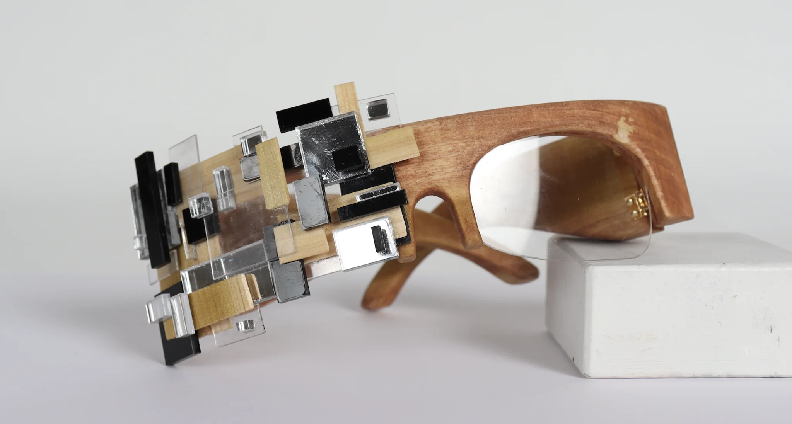
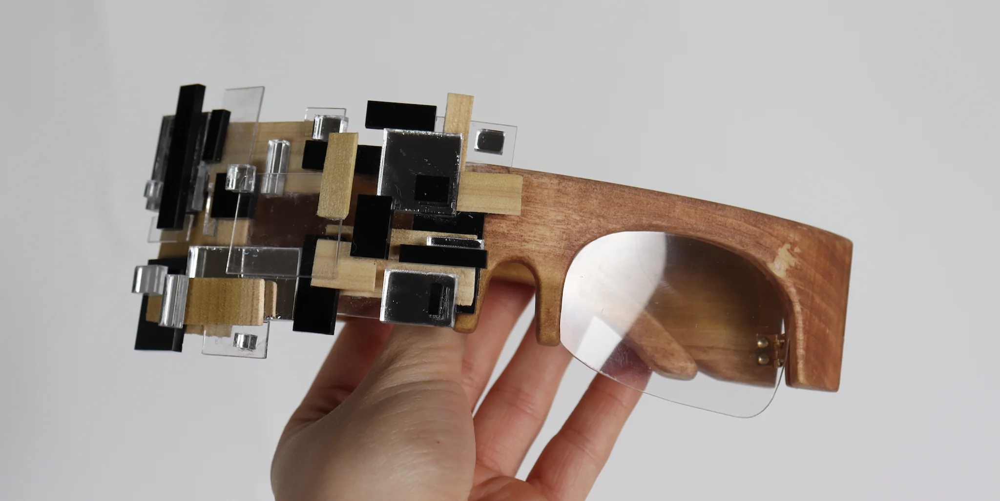
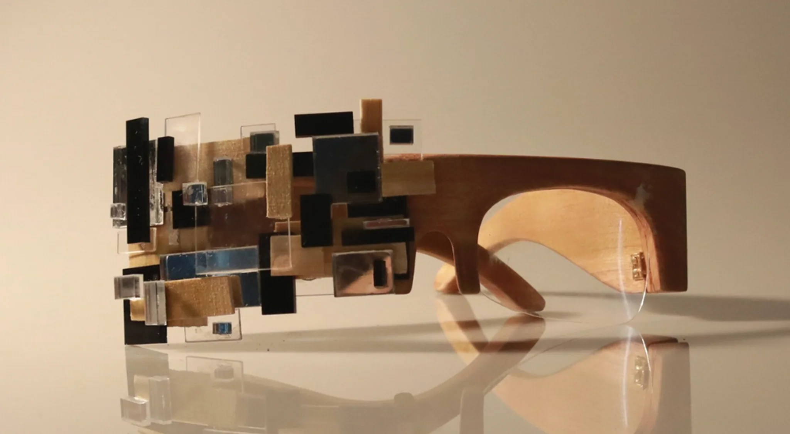
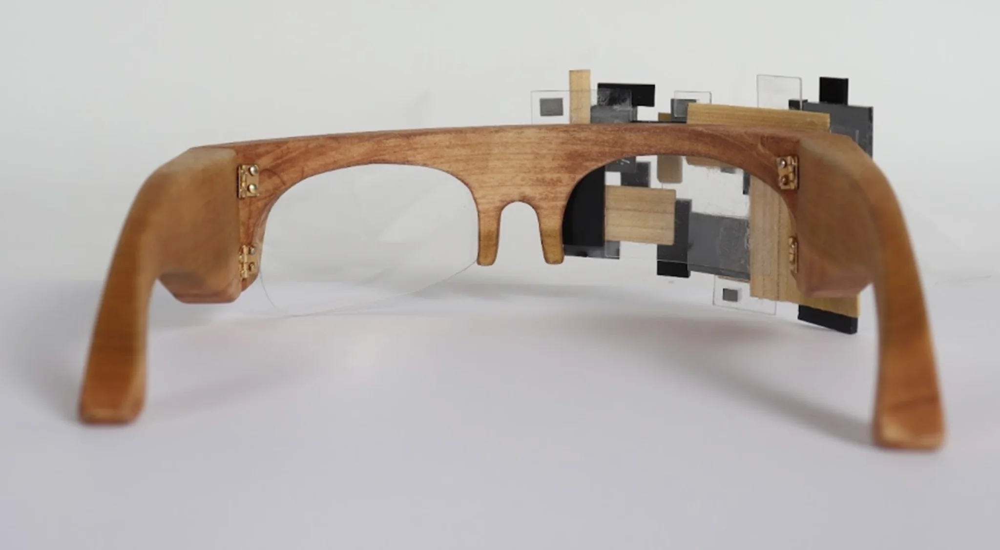
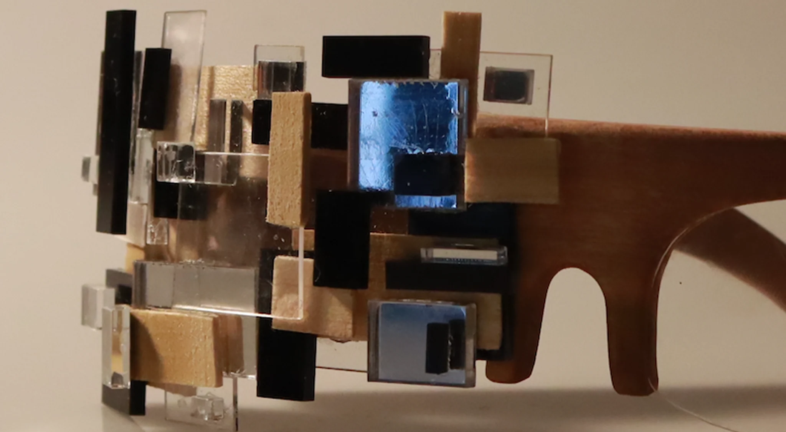

DECODED SIGHT
2025


AN ARTIFACT FOR THE FUTURE
A hand-carved pair of wooden glasses exploring two contrasting ways of seeing. One lens combines fragmented wood and layered acrylic to represent the invisible algorithms that filter our digital experiences, while the other remains clear and unobstructed.
Together, the contrasting lenses reveal how technology quietly shapes what we see and how we perceive the world.
DETAILS
MATERIALS
Poplar wood
Acrylic (mirrored, black, clear)
Hinges
Super glue
DIMENSIONS
7 in x 5.5 in x 2.5 in


